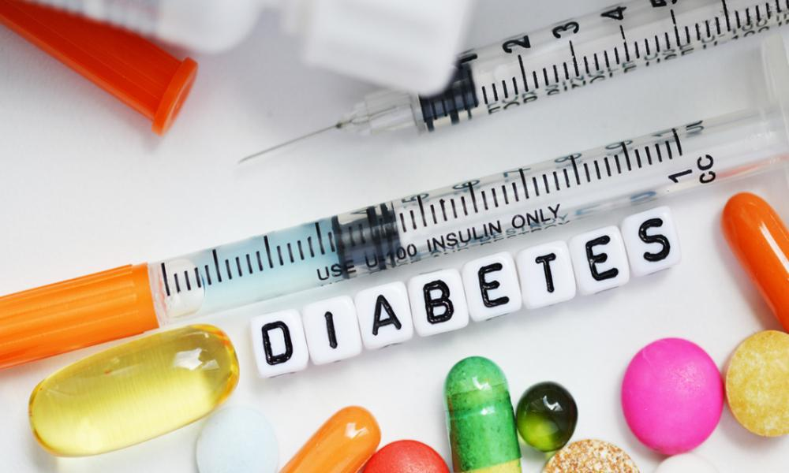

Diabetes is one of the most prevalent chronic diseases that affects many people worldwide.
With an emphasis on Type 2 diabetes, there are certain risk factors such as Body Mass Index (BMI),
Fasting Blood Sugar (FBS), and HbA1C a measure of a persons blood sugar control over the past 3 months,
family history of diabetes, smoking, diet, and exercise.
The objective of this project was to provide a descriptive analysis of the diagnosis of diabetes based on some of these risk factors.


Bike-sharing systems are present in large cities and these cities have
adopted the use of rental bikes to aid mobility. The Objective of this project was to determine number of rental bikes
available at each hour of the day based on current weather. The project identified that bike counts were high
during the season of summer at the hours of 12 -21 with the most
bike count occurring at the 18th hour of the day.

There are a lot of apps available in apple store. These apps identified with several tags
such as track ID, category, app rating and many more. This project explored the data using SQL
to help a supposed app developer with key insights when developing an application.

In this project, I obtained the data from kaggle with the data comprising of Sales
and Profit from many channel available in three countries. I designed a simple interactive
dashboard using the data on the company.